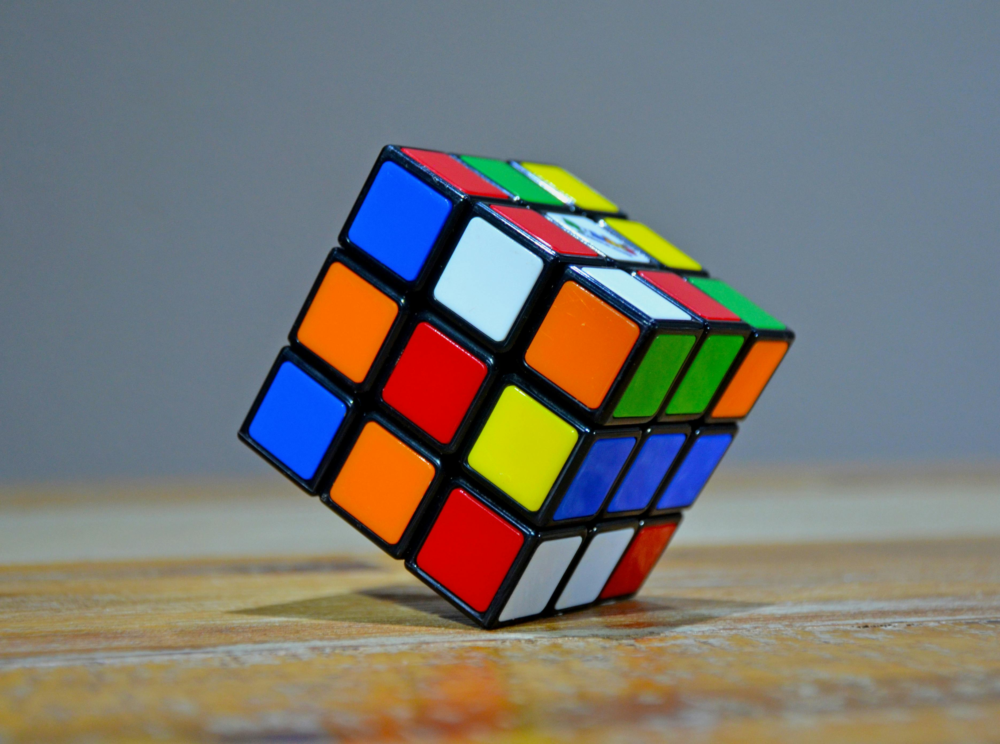

Hobbies
Reading
One of my favourite hobbies as a child was reading. I remember spending countless hours immersed in fantasy worlds, imagining myself as the hero of the story.

Reading allowed me to escape into different worlds and sparked my imagination.
Outdoor Play
I also loved playing outdoors with my friends. We would explore the neighbourhood, build forts, and play imaginative games until the sun went down.

Outdoor play taught me the value of teamwork and encouraged creativity.
Toys
LEGO
LEGO was one of my favourite toys growing up. I enjoyed building elaborate structures and letting my imagination run wild with endless possibilities.
Playing with LEGO allowed me to express my creativity and problem-solving skills.
Toy Cars
Another toy I cherished was my collection of toy cars. I spent hours racing them around imaginary tracks and staging epic car chases.

Playing with toy cars sparked my interest in vehicles and fuelled my imagination.